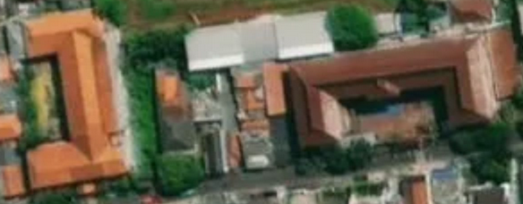
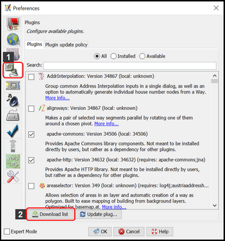
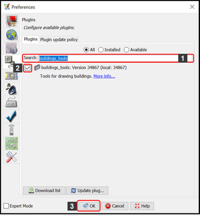
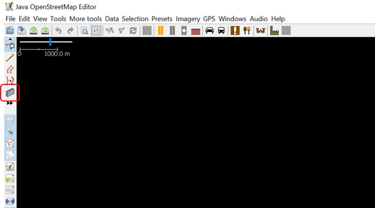
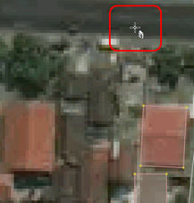
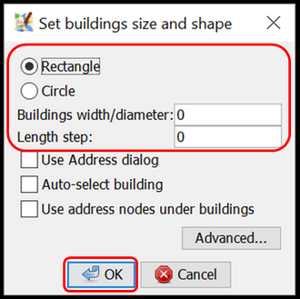
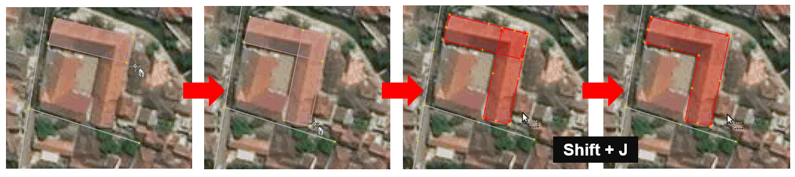

Using buildings tools on JOSM
Objectives:
- To be able to install plugin for drawing buildings
- To be able to use JOSM plugin to draw buildings
When you map using JOSM without conducting field survey, the information mapped on OSM will be very limited since you only use satellite imagery as reference. One of the objects that can be mapped using satellite imagery as reference is building. However, you won’t be able to figure out the specific function of the mapped buildings unless the building has a unique shape such as an L-shaped or a U-shaped school building.

Using OSM, you can map buildings in general without knowing its specific function. You can add preset building=yes for those buildings to identify that the objects you draw are buildings. However, it will be inconvenient if you map a lot of buildings and add preset building=yes for every building you map. JOSM provides a plugin to make building mapping easier. This plugin enables you to create a polygon that automatically has the preset building=yes. This plugin also makes the polygon you draw more orderly in terms of shape. This plugin is called buildings tools.
I. Installing buildings tools
To use buildings tools plugin, you need to install it first. These are the steps to install building tools plugin:
- Open JOSM
- Click menu Edit → Preferences
- Preferences Windows will appear. Select menu Plugins (icon plugin) to install new plugin. If you haven’t already downloaded available plugins, click Download List and make sure your computer is connected to the internet.

- On the Search box, type buildings_tools to search buildings tools plugin. After finding the plugin, give a checkmark next to buildings_tools plugin. Then click OK and wait a little while until the installation process is finished.

Note:
Sometimes JOSM asks you to Restart JOSM after installing new plugin to apply newly installed plugins. However, not all newly installed plugin needs JOSM restarting to be used after installation process finished.
- If the buildings_tools plugin is successfully installed, you will have Draw buildings tool in the upper left side of your JOSM. Now you can use it to draw buildings.

II. Using buildings tools
These are the steps to use buildings tools plugin:
- As explained in Adding OSM Data Using JOSM module, to add OSM data using JOSM you need to download existing OSM data in your mapping area first. To download OSM data, click menu File → Download Data.
- Draw a box covering your mapping area by left clicking and hold your mouse and then move your mouse until a pink box covers the entire mapping area. Then click Download.
- After downloading OSM data, new layer will appear in the Layer Box in the right side of your JOSM. It will be the layer where you add or edit OSM data. Make sure you only add or edit OSM data within the clear area since the shaded area is not your downloaded area.
- Add satellite imagery as mapping reference by clicking menu Imagery → select the imagery you want to use, such as Digital Globe Premium Imagery.
- Now, you are ready to add OSM data. Use the buildings tools to draw buildings. Click buildings tools button (icon Draw buildings) which is located in the upper left of your JOSM or press B on your keyboard. If your cursor has changed into a plus icon with building, then you are ready to map buildings using buildings tools.

- After that, draw the building as seen in the satellite imagery. Right click once on one of the corner of the building. Then move cursor to another corner of the building, next to the first corner, then right click once. Lastly, move cursor to the other corner of the building, next to the second corner, then right click once. See illustration below:

- If there are buildings with similar shape and size in your mapping area, you can set the building’s length and width by clicking menu Data → Set Building Size then fill the width number in Buildings width/diameter box and fill the length number in Length step (both units are in meters). On the Set Building Size Windows, you can set the default shape of the buildings. There are two shape choices: Rectangle or Circle, since buildings in general have the shape of rectangle, choose Rectangle. Then click OK.

- If you find a complex shaped building, such as an L-shaped or a U-shaped building, draw two or three overlapping buildings until it is formed like L or U letter. Select those two or three overlapping buildings, then click menu Tools → Join Overlapping Areas or press Shift + J on your keyboard to join overlapping area of the buildings. After the buildings merged, make the building look orderly by selecting the merged building and then clicking menu Tools → Orthogonalize Shape or press Q on keyboard.

- After all the buildings are mapped, do not forget to upload it by clicking menu File → Upload Data. Type the changes you made, which is adding buildings, in the comment box and type the source for your mapping such as the name of the satellite imagery used and then click Upload Changes.
Notes:
Make sure there is no buildings selected when using buildings_tools so that the cursor can be moved freely while drawing building.
SUMMARY
If you can follow and go through all the instructions above, you are able to install buildings tools plugin and use the building tools plugin to draw buildings.